Prior to the early 1920's, chemists doubted the existence of molecules having molecular weights greater than a few thousand. This limiting view was challenged by Hermann Staudinger, a German chemist with experience in studying natural compounds such as rubber and cellulose. In contrast to the prevailing rationalization of these substances as aggregates of small molecules, Staudinger proposed they were made up of macromolecules composed of 10,000 or more atoms. He formulated a polymeric structure for rubber, based on a repeating isoprene unit (referred to as a monomer). For his contributions to chemistry, Staudinger received the 1953 Nobel Prize. The terms polymer and monomer were derived from the Greek roots poly (many), mono (one) and meros (part).
Recognition that polymeric macromolecules make up many important natural materials was followed by the creation of synthetic analogs having a variety of properties. Indeed, applications of these materials as fibers, flexible films, adhesives, resistant paints and tough but light solids have transformed modern society. Some important examples of these substances are discussed in the following sections.
The repeating structural unit of most simple polymers not only reflects the monomer(s) from which the polymers are constructed, but also provides a concise means for drawing structures to represent these macromolecules. For polyethylene, arguably the simplest polymer, this is demonstrated by the following equation. Here ethylene (ethene) is the monomer, and the corresponding linear polymer is called high-density polyethylene (HDPE). HDPE is composed of macromolecules in which n ranges from 10,000 to 100,000 (molecular weight 2*105 to 3 *106 ).
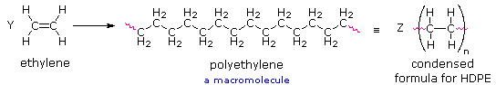
If Y and Z represent moles of monomer and polymer respectively, Z is approximately 10-5 Y. This polymer is called polyethylene rather than polymethylene, (-CH2-)n, because ethylene is a stable compound (methylene is not), and it also serves as the synthetic precursor of the polymer. The two open bonds remaining at the ends of the long chain of carbons (colored magenta) are normally not specified, because the atoms or groups found there depend on the chemical process used for polymerization. The synthetic methods used to prepare this and other polymers will be described later in this chapter. Unlike simpler pure compounds, most polymers are not composed of identical molecules. The HDPE molecules, for example, are all long carbon chains, but the lengths may vary by thousands of monomer units. Because of this, polymer molecular weights are usually given as averages. Two experimentally determined values are common: Mn , the number average molecular weight, is calculated from the mole fraction distribution of different sized molecules in a sample, and Mw , the weight average molecular weight, is calculated from the weight fraction distribution of different sized molecules. These are defined below. Since larger molecules in a sample weigh more than smaller molecules, the weight average Mw is necessarily skewed to higher values, and is always greater than Mn. As the weight dispersion of molecules in a sample narrows, Mw approaches Mn, and in the unlikely case that all the polymer molecules have identical weights (a pure mono-disperse sample), the ratio Mw / Mn becomes unity.
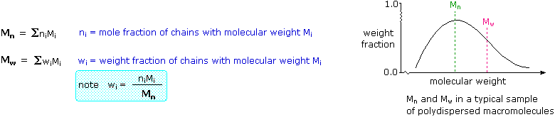
The influence of different mass distributions on Mn and Mw may be examined with the aid of a simple mass calculator. To use this device Click Here.
Many polymeric materials having chain-like structures similar to polyethylene are known. Polymers formed by a straightforward linking together of monomer units, with no loss or gain of material, are called addition polymers or chain-growth polymers. A listing of some important addition polymers and their monomer precursors is presented in the following table.
Name(s)
Formula
Monomer
Properties
Uses
A comparison of the properties of polyethylene (both LDPE & HDPE) with the natural polymers rubber and cellulose is instructive. As noted above, synthetic HDPE macromolecules have masses ranging from 105 to 106 amu (LDPE molecules are more than a hundred times smaller). Rubber and cellulose molecules have similar mass ranges, but fewer monomer units because of the monomer's larger size. The physical properties of these three polymeric substances differ from each other, and of course from their monomers.
• HDPE is a rigid translucent solid which softens on heating above 100º C, and can be fashioned into various forms including films. It is not as easily stretched and deformed as is LDPE. HDPE is insoluble in water and most organic solvents, although some swelling may occur on immersion in the latter. HDPE is an excellent electrical insulator. • LDPE is a soft translucent solid which deforms badly above 75º C. Films made from LDPE stretch easily and are commonly used for wrapping. LDPE is insoluble in water, but softens and swells on exposure to hydrocarbon solvents. Both LDPE and HDPE become brittle at very low temperatures (below -80º C). Ethylene, the common monomer for these polymers, is a low boiling (-104º C) gas. • Natural (latex) rubber is an opaque, soft, easily deformable solid that becomes sticky when heated (above. 60º C), and brittle when cooled below -50º C. It swells to more than double its size in nonpolar organic solvents like toluene, eventually dissolving, but is impermeable to water. The C5H8 monomer isoprene is a volatile liquid (b.p. 34º C). • Pure cellulose, in the form of cotton, is a soft flexible fiber, essentially unchanged by variations in temperature ranging from -70 to 80º C. Cotton absorbs water readily, but is unaffected by immersion in toluene or most other organic solvents. Cellulose fibers may be bent and twisted, but do not stretch much before breaking. The monomer of cellulose is the C6H12O6 aldohexose D-glucose. Glucose is a water soluble solid melting below 150º C.
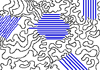
To account for the differences noted here we need to consider the nature of the aggregate macromolecular structure, or morphology, of each substance. Because polymer molecules are so large, they generally pack together in a non-uniform fashion, with ordered or crystalline-like regions mixed together with disordered or amorphous domains. In some cases the entire solid may be amorphous, composed entirely of coiled and tangled macromolecular chains. Crystallinity occurs when linear polymer chains are structurally oriented in a uniform three-dimensional matrix. In the diagram on the right, crystalline domains are colored blue. Increased crystallinity is associated with an increase in rigidity, tensile strength and opacity (due to light scattering). Amorphous polymers are usually less rigid, weaker and more easily deformed. They are often transparent.
Three factors that influence the degree of crystallinity are: i) Chain length ii) Chain branching iii) Interchain bonding
The importance of the first two factors is nicely illustrated by the differences between LDPE and HDPE. As noted earlier, HDPE is composed of very long unbranched hydrocarbon chains. These pack together easily in crystalline domains that alternate with amorphous segments, and the resulting material, while relatively strong and stiff, retains a degree of flexibility. In contrast, LDPE is composed of smaller and more highly branched chains which do not easily adopt crystalline structures. This material is therefore softer, weaker, less dense and more easily deformed than HDPE. As a rule, mechanical properties such as ductility, tensile strength, and hardness rise and eventually level off with increasing chain length.
The nature of cellulose supports the above analysis and demonstrates the importance of the third factor (iii). To begin with, cellulose chains easily adopt a stable rod-like conformation. These molecules align themselves side by side into fibers that are stabilized by inter-chain hydrogen bonding between the three hydroxyl groups on each monomer unit. Consequently, crystallinity is high and the cellulose molecules do not move or slip relative to each other. The high concentration of hydroxyl groups also accounts for the facile absorption of water that is characteristic of cotton.
Natural rubber is a completely amorphous polymer. Unfortunately, the potentially useful properties of raw latex rubber are limited by temperature dependence; however, these properties can be modified by chemical change. The cis-double bonds in the hydrocarbon chain provide planar segments that stiffen, but do not straighten the chain. If these rigid segments are completely removed by hydrogenation (H2 & Pt catalyst), the chains lose all constrainment, and the product is a low melting paraffin-like semisolid of little value. If instead, the chains of rubber molecules are slightly cross-linked by sulfur atoms, a process called vulcanization which was discovered by Charles Goodyear in 1839, the desirable elastomeric properties of rubber are substantially improved. At 2 to 3% crosslinking a useful soft rubber, that no longer suffers stickiness and brittleness problems on heating and cooling, is obtained. At 25 to 35% crosslinking a rigid hard rubber product is formed. The following illustration shows a cross-linked section of amorphous rubber. By clicking on the diagram it will change to a display of the corresponding stretched section. The more highly-ordered chains in the stretched conformation are entropically unstable and return to their original coiled state when allowed to relax (click a second time).
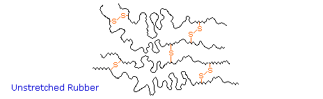
On heating or cooling most polymers undergo thermal transitions that provide insight into their morphology. These are defined as the melt transition, Tm , and the glass transition, Tg .
Tm is the temperature at which crystalline domains lose their structure, or melt. As crystallinity increases, so does Tm. Tg is the temperature below which amorphous domains lose the structural mobility of the polymer chains and become rigid glasses.
Tg often depends on the history of the sample, particularly previous heat treatment, mechanical manipulation and annealing. It is sometimes interpreted as the temperature above which significant portions of polymer chains are able to slide past each other in response to an applied force. The introduction of relatively large and stiff substituents (such as benzene rings) will interfere with this chain movement, thus increasing Tg (note polystyrene below). The introduction of small molecular compounds called plasticizers into the polymer matrix increases the interchain spacing, allowing chain movement at lower temperatures. with a resulting decrease in Tg. The outgassing of plasticizers used to modify interior plastic components of automobiles produces the "new-car smell" to which we are accustomed.
Tm and Tg values for some common addition polymers are listed below. Note that cellulose has neither a Tm nor a Tg.
Polymer
LDPE
HDPE
PP
PVC
PS
PAN
PTFE
PMMA
Rubber
Tm (ºC)
Tg (ºC)
Rubber is a member of an important group of polymers called elastomers. Elastomers are amorphous polymers that have the ability to stretch and then return to their original shape at temperatures above Tg. This property is important in applications such as gaskets and O-rings, so the development of synthetic elastomers that can function under harsh or demanding conditions remains a practical goal. At temperatures below Tg elastomers become rigid glassy solids and lose all elasticity. A tragic example of this caused the space shuttle Challenger disaster. The heat and chemical resistant O-rings used to seal sections of the solid booster rockets had an unfortunately high Tg near 0 ºC. The unexpectedly low temperatures on the morning of the launch were below this Tg, allowing hot rocket gases to escape the seals.
Symmetrical monomers such as ethylene and tetrafluoroethylene can join together in only one way. Monosubstituted monomers, on the other hand, may join together in two organized ways, described in the following diagram, or in a third random manner. Most monomers of this kind, including propylene, vinyl chloride, styrene, acrylonitrile and acrylic esters, prefer to join in a head-to-tail fashion, with some randomness occurring from time to time. The reasons for this regioselectivity will be discussed in the synthetic methods section.
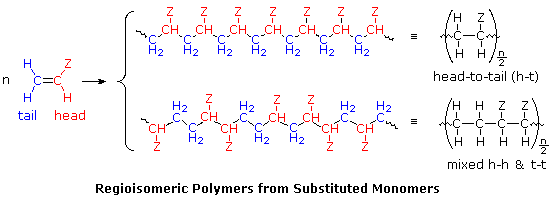
If the polymer chain is drawn in a zig-zag fashion, as shown above, each of the substituent groups (Z) will necessarily be located above or below the plane defined by the carbon chain. Consequently we can identify three configurational isomers of such polymers. If all the substituents lie on one side of the chain the configuration is called isotactic. If the substituents alternate from one side to another in a regular manner the configuration is termed syndiotactic. Finally, a random arrangement of substituent groups is referred to as atactic. Examples of these configurations are shown here.
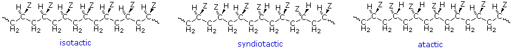
Many common and useful polymers, such as polystyrene, polyacrylonitrile and poly(vinyl chloride) are atactic as normally prepared. Customized catalysts that effect stereoregular polymerization of polypropylene and some other monomers have been developed, and the improved properties associated with the increased crystallinity of these products has made this an important field of investigation. The following values of Tg have been reported.
Tg atactic
Tg isotactic
Tg syndiotactic
The properties of a given polymer will vary considerably with its tacticity. Thus, atactic polypropylene is useless as a solid construction material, and is employed mainly as a component of adhesives or as a soft matrix for composite materials. In contrast, isotactic polypropylene is a high-melting solid (ca. 170 ºC) which can be molded or machined into structural components.
All the monomers from which addition polymers are made are alkenes or functionally substituted alkenes. The most common and thermodynamically favored chemical transformations of alkenes are addition reactions. Many of these addition reactions are known to proceed in a stepwise fashion by way of reactive intermediates, and this is the mechanism followed by most polymerizations. A general diagram illustrating this assembly of linear macromolecules, which supports the name chain growth polymers, is presented here. Since a pi-bond in the monomer is converted to a sigma-bond in the polymer, the polymerization reaction is usually exothermic by 8 to 20 kcal/mol. Indeed, cases of explosively uncontrolled polymerizations have been reported.
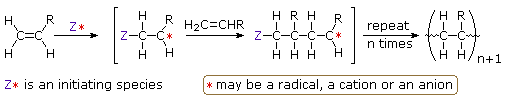
It is useful to distinguish four polymerization procedures fitting this general description.
• Radical Polymerization The initiator is a radical, and the propagating site of reactivity (*) is a carbon radical. • Cationic Polymerization The initiator is an acid, and the propagating site of reactivity (*) is a carbocation. • Anionic Polymerization The initiator is a nucleophile, and the propagating site of reactivity (*) is a carbanion. • Coordination Catalytic Polymerization The initiator is a transition metal complex, and the propagating site of reactivity (*) is a terminal catalytic complex.
Virtually all of the monomers described above are subject to radical polymerization. Since this can be initiated by traces of oxygen or other minor impurities, pure samples of these compounds are often "stabilized" by small amounts of radical inhibitors to avoid unwanted reaction. When radical polymerization is desired, it must be started by using a radical initiator, such as a peroxide or certain azo compounds. The formulas of some common initiators, and equations showing the formation of radical species from these initiators are presented below.
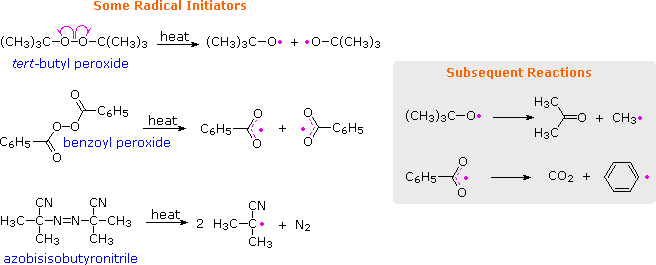
By using small amounts of initiators, a wide variety of monomers can be polymerized. One example of this radical polymerization is the conversion of styrene to polystyrene, shown in the following diagram. The first two equations illustrate the initiation process, and the last two equations are examples of chain propagation. Each monomer unit adds to the growing chain in a manner that generates the most stable radical. Since carbon radicals are stabilized by substituents of many kinds, the preference for head-to-tail regioselectivity in most addition polymerizations is understandable. Because radicals are tolerant of many functional groups and solvents (including water), radical polymerizations are widely used in the chemical industry.
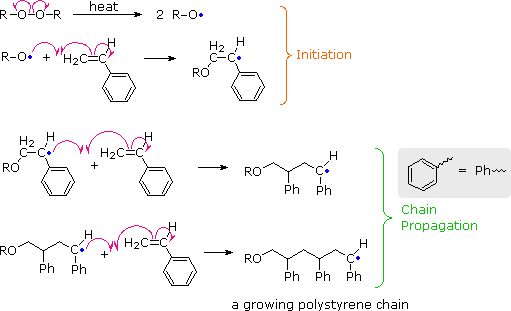
To see an animated model of the radical chain-growth polymerization of vinyl chloride
In principle, once started a radical polymerization might be expected to continue unchecked, producing a few extremely long chain polymers. In practice, larger numbers of moderately sized chains are formed, indicating that chain-terminating reactions must be taking place. The most common termination processes are Radical Combination and Disproportionation. These reactions are illustrated by the following equations. The growing polymer chains are colored blue and red, and the hydrogen atom transferred in disproportionation is colored green. Note that in both types of termination two reactive radical sites are removed by simultaneous conversion to stable product(s). Since the concentration of radical species in a polymerization reaction is small relative to other reactants (e.g. monomers, solvents and terminated chains), the rate at which these radical-radical termination reactions occurs is very small, and most growing chains achieve moderate length before termination.
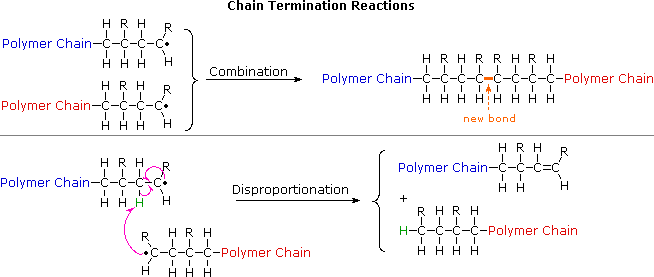
The relative importance of these terminations varies with the nature of the monomer undergoing polymerization. For acrylonitrile and styrene combination is the major process. However, methyl methacrylate and vinyl acetate are terminated chiefly by disproportionation.
Another reaction that diverts radical chain-growth polymerizations from producing linear macromolecules is called chain transfer. As the name implies, this reaction moves a carbon radical from one location to another by an intermolecular or intramolecular hydrogen atom transfer (colored green). These possibilities are demonstrated by the following equations
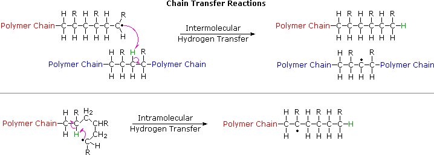
Chain transfer reactions are especially prevalent in the high pressure radical polymerization of ethylene, which is the method used to make LDPE (low density polyethylene). The 1º-radical at the end of a growing chain is converted to a more stable 2º-radical by hydrogen atom transfer. Further polymerization at the new radical site generates a side chain radical, and this may in turn lead to creation of other side chains by chain transfer reactions. As a result, the morphology of LDPE is an amorphous network of highly branched macromolecules.
Polymerization of isobutylene (2-methylpropene) by traces of strong acids is an example of cationic polymerization. The polyisobutylene product is a soft rubbery solid, Tg = _70º C, which is used for inner tubes. This process is similar to radical polymerization, as demonstrated by the following equations. Chain growth ceases when the terminal carbocation combines with a nucleophile or loses a proton, giving a terminal alkene (as shown here).
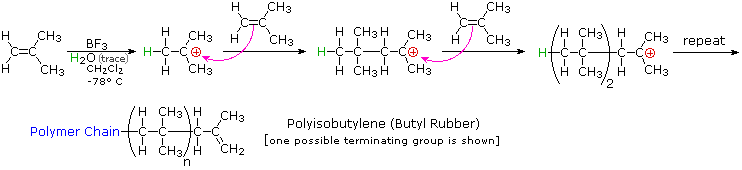
Monomers bearing cation stabilizing groups, such as alkyl, phenyl or vinyl can be polymerized by cationic processes. These are normally initiated at low temperature in methylene chloride solution. Strong acids, such as HClO4 , or Lewis acids containing traces of water (as shown above) serve as initiating reagents. At low temperatures, chain transfer reactions are rare in such polymerizations, so the resulting polymers are cleanly linear (unbranched).
Treatment of a cold THF solution of styrene with 0.001 equivalents of n-butyllithium causes an immediate polymerization. This is an example of anionic polymerization, the course of which is described by the following equations. Chain growth may be terminated by water or carbon dioxide, and chain transfer seldom occurs. Only monomers having anion stabilizing substituents, such as phenyl, cyano or carbonyl are good substrates for this polymerization technique. Many of the resulting polymers are largely isotactic in configuration, and have high degrees of crystallinity.
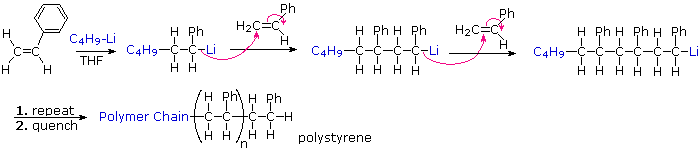
Species that have been used to initiate anionic polymerization include alkali metals, alkali amides, alkyl lithiums and various electron sources. A practical application of anionic polymerization occurs in the use of superglue. This material is methyl 2-cyanoacrylate, CH2=C(CN)CO2CH3. When exposed to water, amines or other nucleophiles, a rapid polymerization of this monomer takes place.
An efficient and stereospecific catalytic polymerization procedure was developed by Karl Ziegler (Germany) and Giulio Natta (Italy) in the 1950's. Their findings permitted, for the first time, the synthesis of unbranched, high molecular weight polyethylene (HDPE), laboratory synthesis of natural rubber from isoprene, and configurational control of polymers from terminal alkenes like propene (e.g. pure isotactic and syndiotactic polymers). In the case of ethylene, rapid polymerization occurred at atmospheric pressure and moderate to low temperature, giving a stronger (more crystalline) product (HDPE) than that from radical polymerization (LDPE). For this important discovery these chemists received the 1963 Nobel Prize in chemistry.
Ziegler-Natta catalysts are prepared by reacting certain transition metal halides with organometallic reagents such as alkyl aluminum, lithium and zinc reagents. The catalyst formed by reaction of triethylaluminum with titanium tetrachloride has been widely studied, but other metals (e.g. V & Zr) have also proven effective. The following diagram presents one mechanism for this useful reaction. Others have been suggested, with changes to accommodate the heterogeneity or homogeneity of the catalyst. Polymerization of propylene through action of the titanium catalyst gives an isotactic product; whereas, a vanadium based catalyst gives a syndiotactic product.
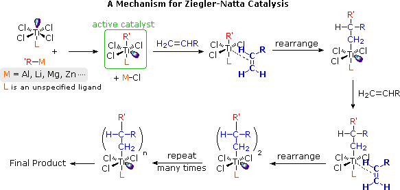
The synthesis of macromolecules composed of more than one monomeric repeating unit has been explored as a means of controlling the properties of the resulting material. In this respect, it is useful to distinguish several ways in which different monomeric units might be incorporated in a polymeric molecule. The following examples refer to a two component system, in which one monomer is designated A and the other B.
Statistical Copolymers
Also called random copolymers. Here the monomeric units are distributed randomly, and sometimes unevenly, in the polymer chain: ~ABBAAABAABBBABAABA~.
Alternating Copolymers
Here the monomeric units are distributed in a regular alternating fashion, with nearly equimolar amounts of each in the chain: ~ABABABABABABABAB~.
Block Copolymers
Instead of a mixed distribution of monomeric units, a long sequence or block of one monomer is joined to a block of the second monomer: ~AAAAA-BBBBBBB~AAAAAAA~BBB~.
Graft Copolymers
As the name suggests, side chains of a given monomer are attached to the main chain of the second monomer: ~AAAAAAA(BBBBBBB~)AAAAAAA(BBBB~)AAA~.
Most direct copolymerizations of equimolar mixtures of different monomers give statistical copolymers, or if one monomer is much more reactive a nearly homopolymer of that monomer. The copolymerization of styrene with methyl methacrylate, for example, proceeds differently depending on the mechanism. Radical polymerization gives a statistical copolymer. However, the product of cationic polymerization is largely polystyrene, and anionic polymerization favors formation of poly(methyl methacrylate). In cases where the relative reactivities are different, the copolymer composition can sometimes be controlled by continuous introduction of a biased mixture of monomers into the reaction. Formation of alternating copolymers is favored when the monomers have different polar substituents (e.g. one electron withdrawing and the other electron donating), and both have similar reactivities toward radicals. For example, styrene and acrylonitrile copolymerize in a largely alternating fashion.
Monomer A
Monomer B
Copolymer
A terpolymer of acrylonitrile, butadiene and styrene, called ABS rubber, is used for high-impact containers, pipes and gaskets.
Several different techniques for preparing block copolymers have been developed, many of which use condensation reactions (next section). At this point, our discussion will be limited to an application of anionic polymerization. In the anionic polymerization of styrene described above, a reactive site remains at the end of the chain until it is quenched. The unquenched polymer has been termed a living polymer, and if additional styrene or a different suitable monomer is added a block polymer will form. This is illustrated for methyl methacrylate in the following diagram.
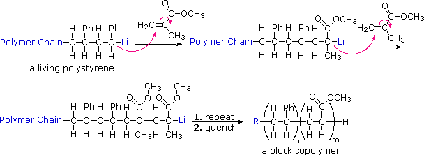
A large number of important and useful polymeric materials are not formed by chain-growth processes involving reactive species such as radicals, but proceed instead by conventional functional group transformations of polyfunctional reactants. These polymerizations often (but not always) occur with loss of a small byproduct, such as water, and generally (but not always) combine two different components in an alternating structure. The polyester Dacron and the polyamide Nylon 66, shown here, are two examples of synthetic condensation polymers, also known as step-growth polymers. In contrast to chain-growth polymers, most of which grow by carbon-carbon bond formation, step-growth polymers generally grow by carbon-heteroatom bond formation (C-O & C-N in Dacron & Nylon respectively). Although polymers of this kind might be considered to be alternating copolymers, the repeating monomeric unit is usually defined as a combined moiety. Examples of naturally occurring condensation polymers are cellulose, the polypeptide chains of proteins, and poly(β-hydroxybutyric acid), a polyester synthesized in large quantity by certain soil and water bacteria. Formulas for these will be displayed below by clicking on the diagram.
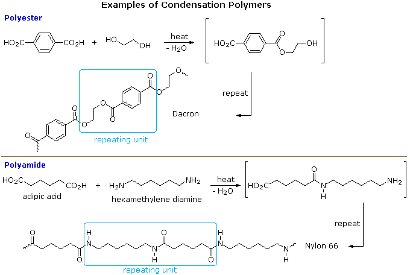
Condensation polymers form more slowly than addition polymers, often requiring heat, and they are generally lower in molecular weight. The terminal functional groups on a chain remain active, so that groups of shorter chains combine into longer chains in the late stages of polymerization. The presence of polar functional groups on the chains often enhances chain-chain attractions, particularly if these involve hydrogen bonding, and thereby crystallinity and tensile strength. The following examples of condensation polymers are illustrative. Note that for commercial synthesis the carboxylic acid components may actually be employed in the form of derivatives such as simple esters. Also, the polymerization reactions for Nylon 6 and Spandex do not proceed by elimination of water or other small molecules. Nevertheless, the polymer clearly forms by a step-growth process.
Type
Components
Tg ºC
Tm ºC
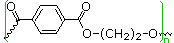
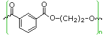
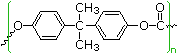
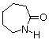
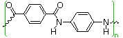
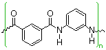
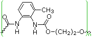
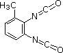
The difference in Tg and Tm between the first polyester (completely aliphatic) and the two nylon polyamides (5th & 6th entries) shows the effect of intra-chain hydrogen bonding on crystallinity. The replacement of flexible alkylidene links with rigid benzene rings also stiffens the polymer chain, leading to increased crystalline character, as demonstrated for polyesters (entries 1, 2 &3) and polyamides (entries 5, 6, 7 & 8). The high Tg and Tm values for the amorphous polymer Lexan are consistent with its brilliant transparency and glass-like rigidity. Kevlar and Nomex are extremely tough and resistant materials, which find use in bullet-proof vests and fire resistant clothing.
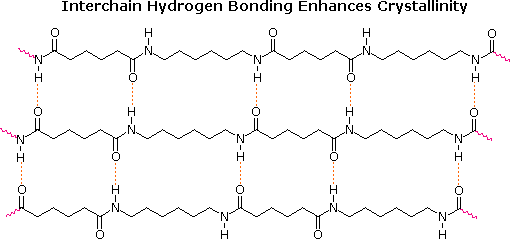
Many polymers, both addition and condensation, are used as fibers The chief methods of spinning synthetic polymers into fibers are from melts or viscous solutions. Polyesters, polyamides and polyolefins are usually spun from melts, provided the Tm is not too high. Polyacrylates suffer thermal degradation and are therefore spun from solution in a volatile solvent. Cold-drawing is an important physical treatment that improves the strength and appearance of these polymer fibers. At temperatures above Tg, a thicker than desired fiber can be forcibly stretched to many times its length; and in so doing the polymer chains become untangled, and tend to align in a parallel fashion. This cold-drawing procedure organizes randomly oriented crystalline domains, and also aligns amorphous domains so they become more crystalline. In these cases, the physically oriented morphology is stabilized and retained in the final product. This contrasts with elastomeric polymers, for which the stretched or aligned morphology is unstable relative to the amorphous random coil morphology. By clicking on the following diagram, a cartoon of these changes will toggle from one extreme to the other. This cold-drawing treatment may also be used to treat polymer films (e.g. Mylar & Saran) as well as fibers.
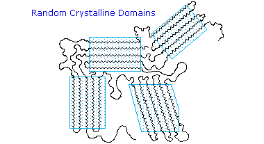
Step-growth polymerization is also used for preparing a class of adhesives and amorphous solids called epoxy resins. Here the covalent bonding occurs by an SN2 reaction between a nucleophile, usually an amine, and a terminal epoxide. In the following example, the same bisphenol A intermediate used as a monomer for Lexan serves as a difunctional scaffold to which the epoxide rings are attached. Bisphenol A is prepared by the acid-catalyzed condensation of acetone with phenol.
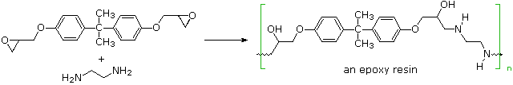
Most of the polymers described above are classified as thermoplastic. This reflects the fact that above Tg they may be shaped or pressed into molds, spun or cast from melts or dissolved in suitable solvents for later fashioning. Because of their high melting point and poor solubility in most solvents, Kevlar and Nomex proved to be a challenge, but this was eventually solved. Another group of polymers, characterized by a high degree of cross-linking, resist deformation and solution once their final morphology is achieved. Such polymers are usually prepared in molds that yield the desired object. Because these polymers, once formed, cannot be reshaped by heating, they are called thermosets .Partial formulas for four of these will be shown below by clicking the appropriate button. The initial display is of Bakelite, one of the first completely synthetic plastics to see commercial use (circa 1910).
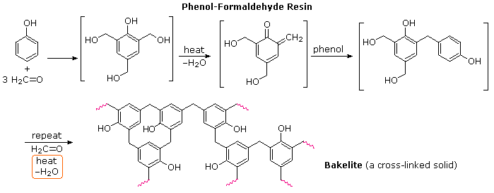
A natural resinous polymer called lignin has a cross-linked structure similar to bakelite. Lignin is the amorphous matrix in which the cellulose fibers of wood are oriented. Wood is a natural composite material, nature's equivalent of fiberglass and carbon fiber composites. A partial structure for lignin is shown here
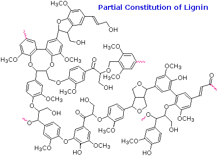
Historically, many eras were characterized by the materials that were then important to human society (e.g. stone age, bronze age and iron age). The 20th century has acquired several labels of this sort, including the nuclear age and the oil age; however, the best name is likely the plastic age. During this period no technological advancement, other than the delivery of electrical power to every home, has impacted our lives more than the widespread use of synthetic plastics in our clothes, dishes, construction materials, automobiles, packaging, and toys, to name a few. The development of materials that we now call plastics began with rayon in 1891, continuing with Bakelite in 1907, polyethylene in 1933, Nylon and Teflon in 1938, polypropylene in 1954, Kevlar in 1965, and is continuing.
The many types of polymers that we lump together as plastics are, in general, inexpensive, light weight, strong, durable and, when desired, flexible. Plastics may be processed by extrusion, injection-moulding, vacuum-forming, and compression, emerging as fibers, thin sheets or objects of a specific shape. They may be colored as desired and reinforced by glass or carbon fibers, and some may be expanded into low density foams. Many modern adhesives involve the formation of a plastic bonding substance. Plastics have replaced an increasing number of natural substances. In the manufacture of piano keys and billiard balls plastics have replaced ivory, assisting the survival of the elephant. It is noteworthy that a synthetic fiber manufacturing facility occupies a much smaller area of ground than would be needed to produce an equal quantity of natural fibers, such as cotton, wool or silk. With all these advantages it is not surprising that much of what you see around you is plastic. Indeed, the low cost, light weight, strength and design adaptability of plastics to meet a variety of applications have resulted in strong year after year growth in their production and use, which is likely to continue. Indeed, many plastics are employed in disposable products meant only for a single use.
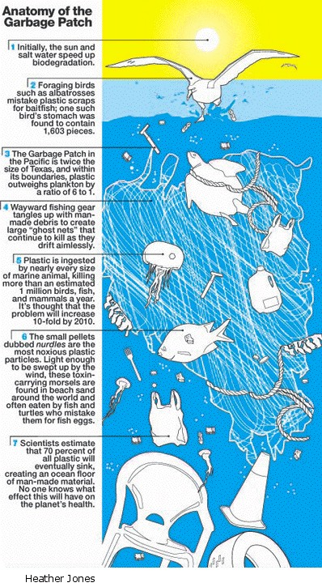
Aside from its disgusting aesthetic presence, the garbage patch is representative of serious environmental and health problems. No one knows how long it will take for some of these plastics to biodegrade, or return to their component molecules. Persistent objects such as six-pack rings and discarded nets trap sea animals. Smaller plastic scraps are mistaken for food by sea birds; and are often found undigested in the gut of dead birds. Nurdles, lentil-size pellets of plastic, found in abundance where plastics are manufactured and distributed, are dispersed by wind throughout the biosphere. They're light enough to blow around like dust and to wash into harbors, storm drains, and creeks. Escaped nurdles and other plastic litter migrate to the ocean gyre largely from land. At places as remote as Rarotonga, in the Cook Islands they're commonly found mixed with beach sand. Once in the ocean, nurdles may absorb up to a million times the level of any organic pollutants found in surrounding waters. Nurdles in the sea are easily mistaken for fish eggs by creatures that would very much like to have such a snack. Once inside the body of a bigeye tuna or a king salmon, they become part of our food chain.
Most plastics crumble into ever-tinier fragments as they are exposed to sunlight and the elements. Except for the small amount that's been incinerated–and it's a very small amount–every bit of plastic ever made still exists, unless the material's molecular structure is designed to favor biodegradation. Unfortunately, cleaning up the garbage patch is not a realistic option, and unless we change our disposal and recycling habits, it will undoubtedly get bigger. One sensible solution would require manufacturers to use natural biodegradable packaging materials whenever possible, and consumers to conscientiously dispose of their plastic waste. Thus, instead of consigning all plastic trash to a land fill, some of it may provide energy by direct combustion, and some converted for reuse as a substitute for virgin plastics. The latter is particularly attractive since a majority of plastics are made from petroleum, a diminishing resource with a volatile price. The energy potential of plastic waste is relatively significant, ranging from 10.2 to 30.7MJkgÐ1, suggesting application as an energy source and temperature stabilizer in municipal incinerators, thermal power plants and cement kilns. The use of plastic waste as a fuel source would be an effective means of reducing landfill requirements while recovering energy. This, however, depends on using appropriate materials. Inadequate control of combustion, especially for plastics containing chlorine, fluorine and bromine, constitutes a risk of emitting toxic pollutants.
Whether used as fuels or a source of recycled plastic, plastic waste must be separated into different categories. To this end, an identification coding system was developed by the Society of the Plastics Industry (SPI) in 1988, and is used internationally. This code, shown on the right, is a set of symbols placed on plastics to identify the polymer type, for the purpose of allowing efficient separation of different polymer types for recycling. The abbreviations of the code are explained in the following table.
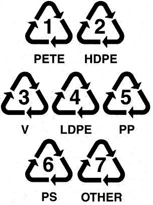
Despite use of the recycling symbol in the coding of plastics, there is consumer confusion about which plastics are readily recyclable. In most communities throughout the United States, PETE and HDPE are the only plastics collected in municipal recycling programs. However, some regions are expanding the range of plastics collected as markets become available. (Los Angeles, for example, recycles all clean plastics numbered 1 through 7) In theory, most plastics are recyclable and some types can be used in combination with others. In many instances, however, there is an incompatibility between different types that necessitates their effective separation. Since the plastics utilized in a given manufacturing sector (e.g. electronics, automotive, etc.) is generally limited to a few types, effective recycling is often best achieved with targeted waste streams.
The plastic trash from most households, even with some user separation, is a mixture of unidentified pieces. Recycling of such mixtures is a challenging problem. A float/sink process has proven useful as a first step. When placed in a medium of intermediate density, particles of different densities separate-lower density particles float while those of higher density sink. Various separation media have been used, including water or water solutions of known density (alcohol, NaCl, CaCl2 or ZnCl2). As shown in the following table, the densities of common plastics differ sufficiently to permit them to be discriminated in this fashion. The cylindroconical cyclone device, shown on the right, provides a continuous feed procedure in which the material to be separated is pumped into the vessel at the same time as the separating media. Some polymers, such as polystyrene and polyurethane, are commonly formed into foamed solids that have a much lower density than the solid material.
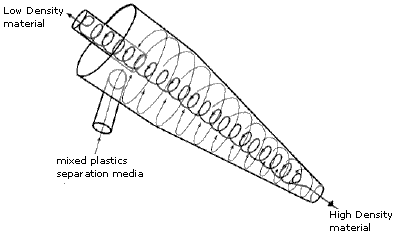
One serious problem in recycling is posed by the many additives found in plastic waste. These include pigments for coloring, solid fibers in composites, stabilizers and plasticizers. In the case of PETE (or PET), which is commonly used for bottles, some waste may be mechanically and thermally treated to produce low grade packaging materials and fibers. To increase the value of recovered PETE it may be depolymerized by superheated methanol into dimethyl terephthalate and ethylene glycol. These chemicals are then purified and used to make virgin PETE. Hydrocarbon polymers such as polyethylene and polypropylene may be melted and extruded into pellets for reuse. However, the presence of dyes or pigments limits the value of this product.
Plastics derived from natural materials, such as cellulose, starch and hydroxycarboxylic acids are more easily decomposed when exposed to oxygen, water, soil organisms and sunlight than are most petroleum based polymers. The glycoside linkages in polysaccharides and the ester groups in polyesters represent points of attack by the enzymes of microorganisms that facilitate their decomposition. Such biodegradable materials can be composted, broken down and returned to the earth as useful nutrients. However, it is important to recognize that proper composting is necessary. Placing such materials in a landfill results in a slower anaerobic decomposition, which produces methane, a greenhouse gas.
Derivatives of cellulose, such as cellulose acetate, have long served for the manufacture of films and fibers. The most useful acetate material is the diacetate, in which two thirds of the cellulose hydroxyl groups have been esterified. Acetate fibers loose strength when wet, and acetate clothing must be dry cleaned. The other major polysaccharide, starch, is less robust than cellulose, but in pelletized form it is now replacing polystyrene as a packing material. The two natural polyesters that are finding increasing use as replacements for petroleum based plastics are polylactide (PLA) and polyhydroxyalkanoates (PHA), the latter most commonly as copolymers with polyhydroxybutyrate (PHB). Structures for the these polymers and their monomer precursors are shown below.
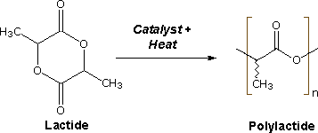
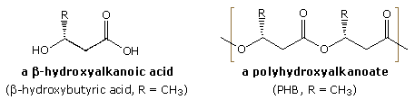
PLA is actually a polymer of lactic acid, but the dimeric lactide is used as the precursor to avoid the water that would be formed in a direct poly-esterification. Bacterial fermentation is used to produce lactic acid from corn starch or cane sugar. After dimerization to the lactide, ring-opening polymerization of the purified lactide is effected using stannous compounds as catalysts. PLA can be processed like most thermoplastics into fibers and films. In situations that require a high level of impact strength, the toughness of PLA in its pristine state is often insufficient. Blends of PLA with polymers such as ABS have good form-stability and visual transparency, making them useful for low-end packaging applications. PLA materials are currently used in a number of biomedical applications, such as sutures, stents, dialysis media and drug delivery devices. However, one of the drawbacks of polylactides for biomedical applications is their brittleness. Lactic acid has a chiral center, the (S)(+)-enantiomer being the abundant natural form (L-lactic acid). Due to the chiral nature of lactic acid, several distinct forms of polylactide exist. Poly-L-lactide (PLLA) is the product resulting from polymerization of (S,S)-lactide. PLLA has a crystallinity of around 37%, a glass transition temperature between 50-80 ºC and a melting temperature between 173-178 ºC. The melting temperature of PLLA can be increased 40-50 ºC and its heat deformation temperature can be increased from approximately 60 ºC to up to 190 ºC by physically blending the polymer with PDLA (poly-D-lactide). PDLA and PLLA form a highly regular stereocomplex with increased crystallinity.
PHA (polyhydroxyalkanoates) are synthesized by microorganisms such as Alcaligenes eutrophus, grown in a suitable medium and fed appropriate nutrients so that it multiplies rapidly. Once the population has increased, the nutrient composition is changed, forcing the micro-organism to synthesize PHA. Harvested amounts of PHA from the organism can be as high as 80% of the organism's dry weight. The simplest and most commonly occurring form of PHA is poly (R-3-hydroxybutyrate), PHB or P(3HB)). Pure PHB, consisting of 1000 to 30000 hydroxy acid units, is relatively brittle and stiff. Depending upon the microorganism, many of which are genetically engineered for this purpose, and the cultivation conditions, homo- or copolyesters with different hydroxyalkanic acids may be generated. Such copolymers may have improved physical properties compared with homo P(3HB). Presently, these PHAs cost about twice as much as petroleum-based plastics. An engineered switch-grass that grows PHA inside its leaves and stems has also been created, offering the possibility of avoiding some of the costs associated with large scale bacterial fermentation. In contrast to P(3HB), the polymer of 4-hydroxybutyrate, P(4HB), is elastic and flexible with a higher tensile strength. Copolymers of P(3HB) and P(4HB) are synthesized by Comamonas acidovarans. The molecular weigh remains roughly the same (400,000-700,000 Da), but thermal properties correlate with the ratio of these monomer units. The mp decreases from 179 to 130 (or lower) with an increase in 4HB, and as 4HB increases from 0% to 100% the Tg decreases from 4 to -46. 4-Hydroxybutyrate (4HB) is produced from 1,4-butanediol by microorganisms such as Aeromonas hydrophila, Escherichia coli , or Pseudomonas putida. Fermentation broth containing 4HB has then been used for the production of the homopolymer P(4HB), as well as copolymers with P(3HB), [P(3HB-4HB)]. The following table lists some of the properties of these homo-polymers and co-polymers.
It remains an open question whether it's more energy and cost efficient to use biodegradable plastic or to recycle petroleum-based plastic. There is little doubt, however, that biodegradable materials lead to less environmental pollution when randomly discarded after use, as is often the case.
The following problems focus on concepts and facts associated with the treatment of polymer chemistry in this text.
Return to Table of Contents
This page is the property of The Edvibe Team. Comments, questions and errors should be sent to contact@edvibe.co.ke. These pages are provided to the IOCD to assist in capacity building in chemical education. 05/05/2013